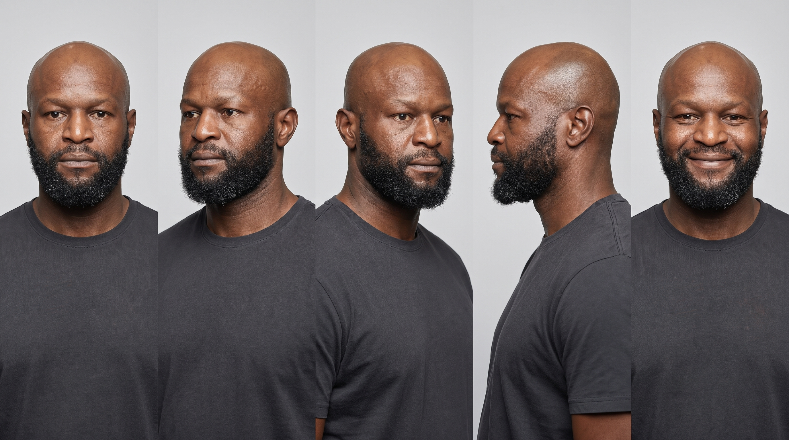
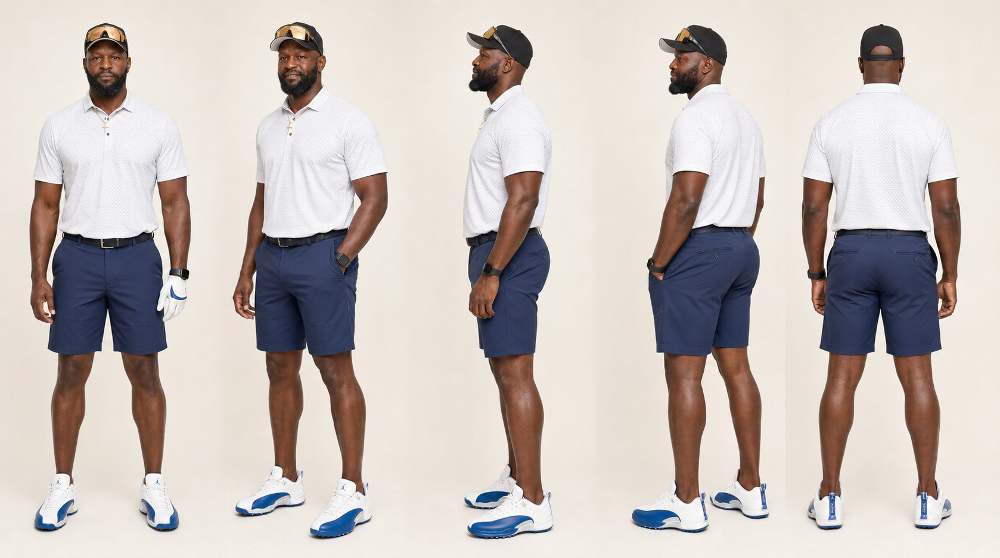
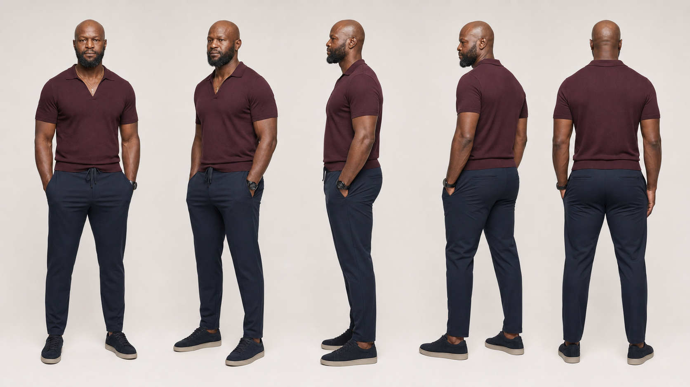

Section B
Personal Branding
Use Gosder's presence, Character Sheet, wardrobe, behavior, and photography consistently.
01
How Gosder shows up
Presence
Calm, confident, and welcoming.
Wardrobe
Relaxed athletic clothing by day and polished, understated clothing for evenings and speaking.
Behavior
Read, listen, walk, play, host, explain, or share the table.
Setting
Natural environments, warm light, texture, and real activity.
02
Character Sheet
Use this reference to keep Gosder's face and expression consistent.

03
Wardrobe


French Sport Day
Relaxed athletic clothing for daytime, golf, travel, and casual conversation.
- Fitted sport cap
- Chalk or ivory textured polo
- Midnight-navy tailored sport shorts
- White and royal-blue golf sneaker
- Gold cross chain and sport watch
Cultured Evening
Polished, understated clothing for evenings, interviews, and speaking.
- Deep oxblood knit polo or open-collar shirt
- Midnight-navy tailored trousers
- Dark matte low-profile sneaker
- Gold cross chain and sport watch
- Optional lightweight navy linen layer
04
How to use it
Keep Gosder recognizable and natural
Use the Character Sheet and one wardrobe direction when planning photography or imagery. Keep expression, posture, styling, and setting consistent.